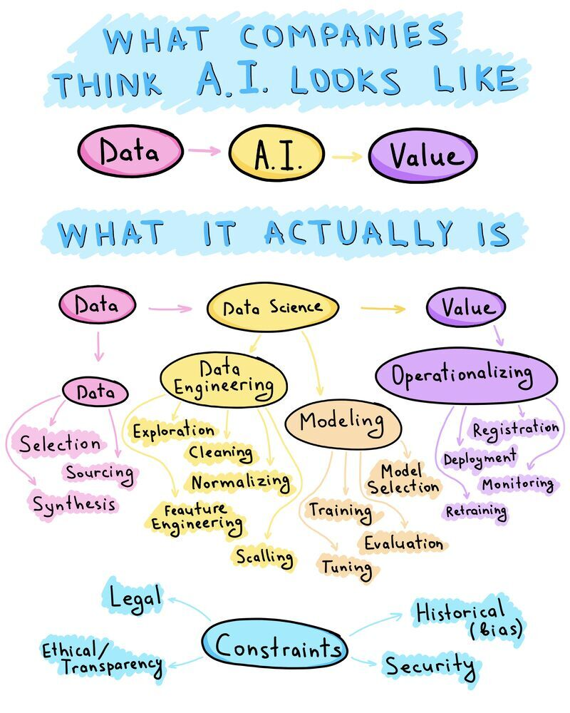

Leaping from your workstation to production
Best practices in R programming
12/1/22
Our work has changed…


This is really important!

What is production?

What is production?
Your definition of production is unique!
Using R (or other script) in a non-interactive way:
- scheduled
- triggered via upstream job trigger or API request
- deployed/running somewhere else
- remote server
- container

What about the actual code itself?

Many options to the rescue

You have many options to save you
- Functional programming
- Meta programming
- DRY (don’t repeat yourself)
You probably have been doing some of this in R!

Oh, and code shouldn’t lie!

Thank You
marck.vaisman@microsoft.com